Evento
Dia das Crianças
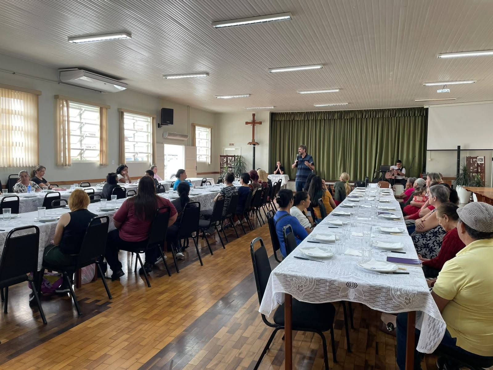
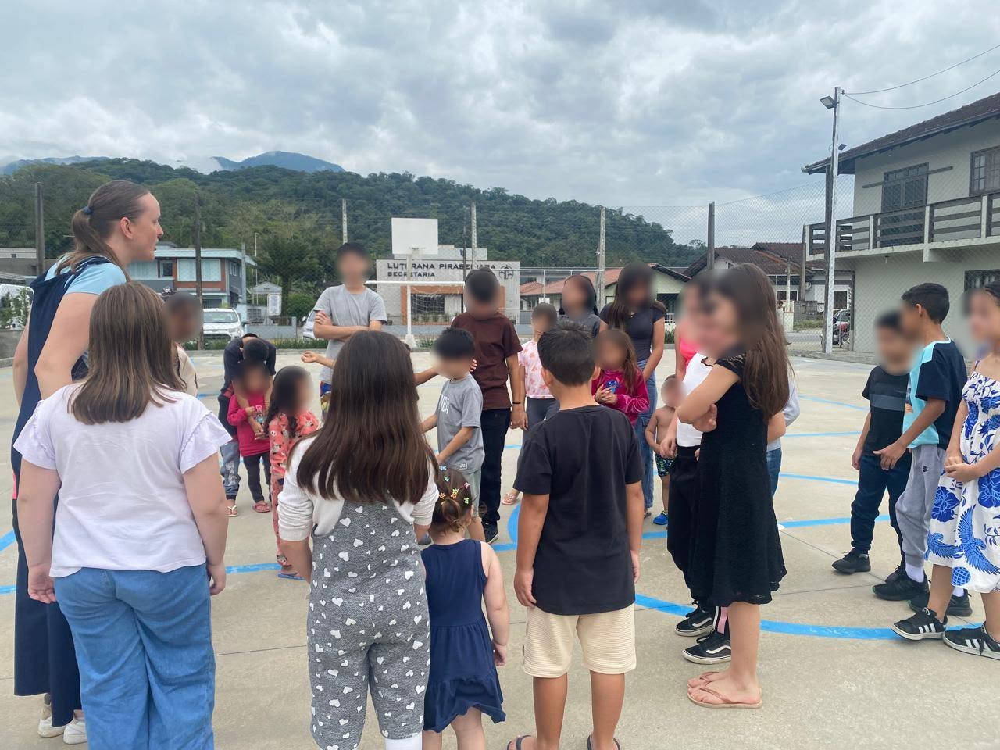
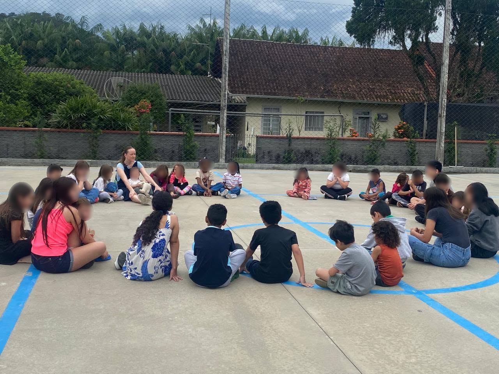
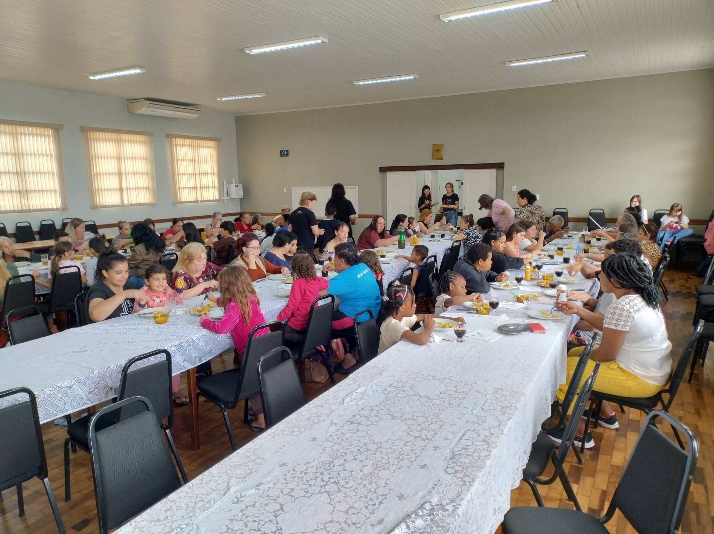
Cultos
Os cultos que correm ás terça-feira, incluindo o momento das crianças.
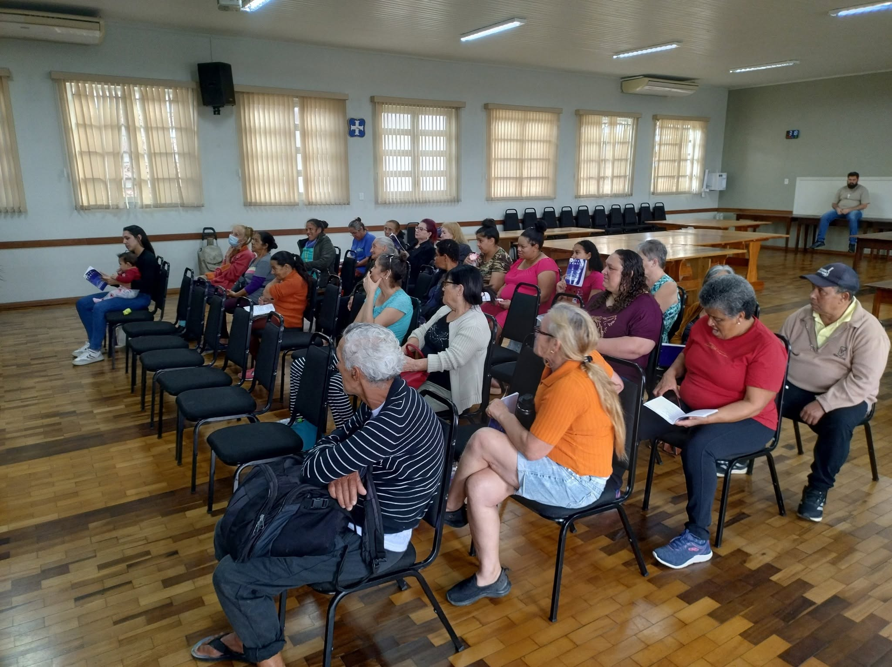
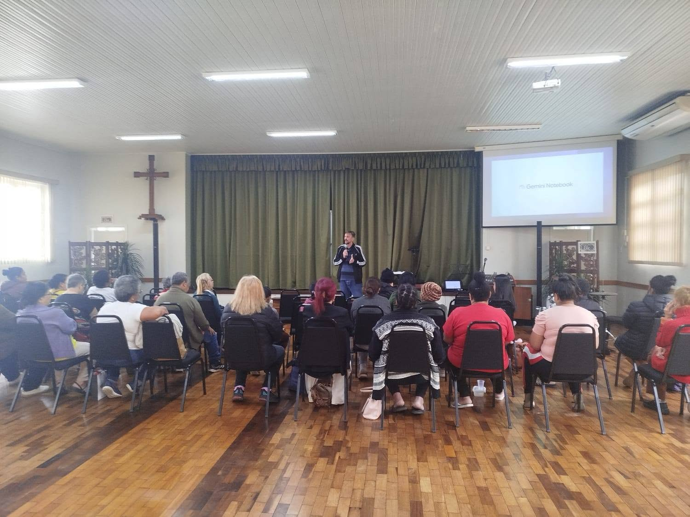
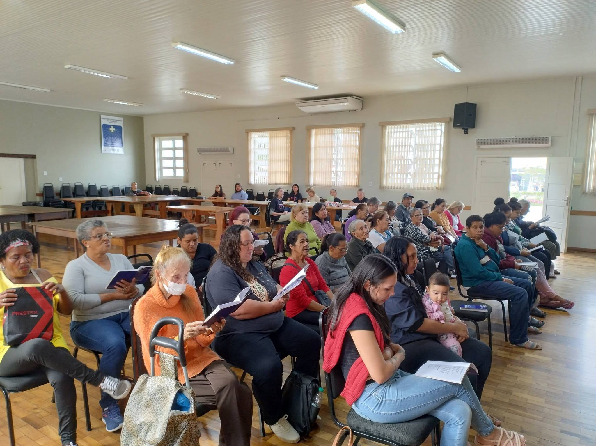
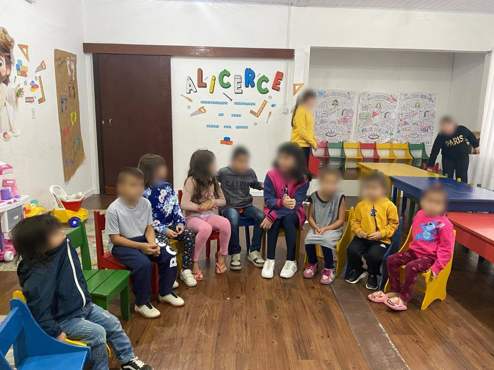
Cursos
Curso de Culinária.
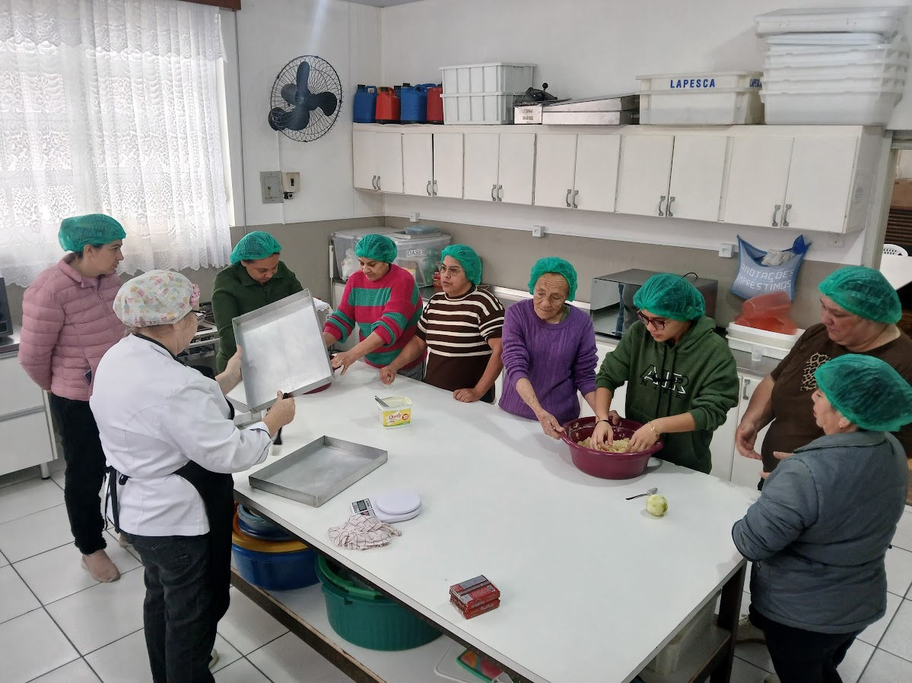
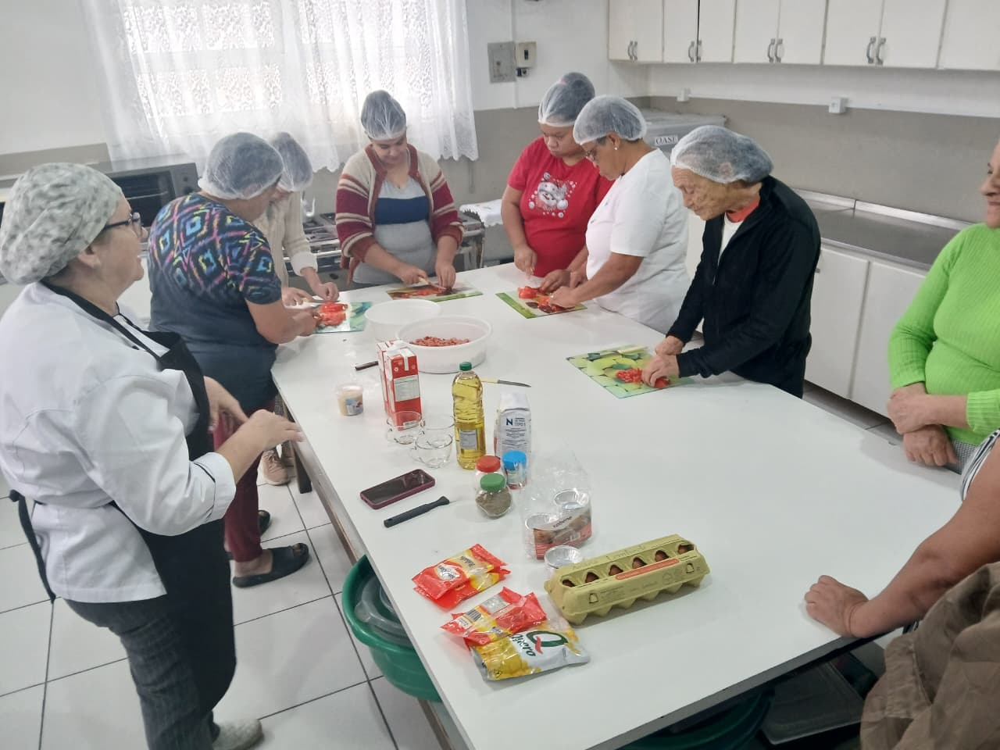
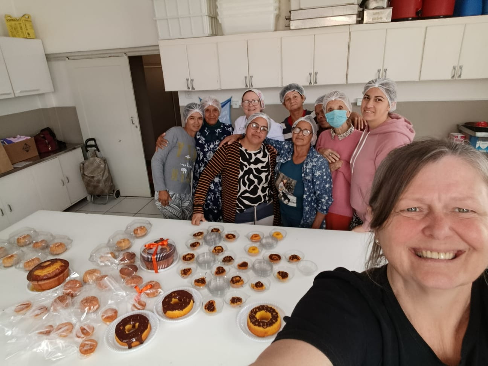
Diversos
Brechó e entrega das cestas
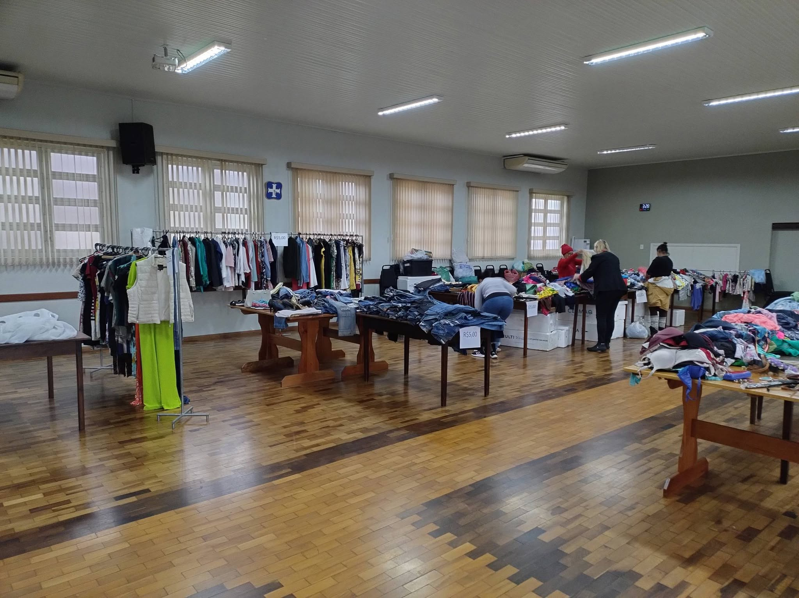
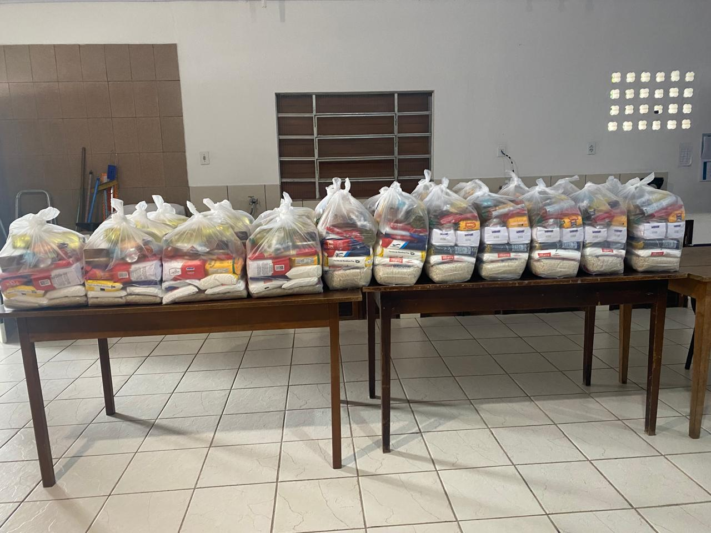
Quer ajudar?
Você pode contribuir com a Missão Diaconal da Igreja Luterana de Pirabeiraba de diferentes maneiras: doando roupas e alimentos, contribuindo com outros itens necessários ou dedicando seu tempo para servir.
Sim! Quero saber mais sobre como ajudar!